recherches généalogiques
Projet
Faire l'histoire familiale du XIXème siècle à nos jours, du point de vue de Simone Triboulat, ma grand-mère maternelleAinsi, les liens de parenté indiqués, père, mère, grand-père, oncle, etc, se placent tous du point de vue de Simone
A faire
contacter Didier Volondat & jean-louis volondat, neveux de Simone.. D'après maman, c'est Didier qui connaît le mieux la famille.
Recherches
Parents
Un enfant naturel dans la famille ?
il faudrait tirer au clair ce cas soulevé par Nathalie.Car notre jean Triboulat (le grand-père paternel de Simone) est né le 16 avril 1842, et a donc bien 29 ans le 9 janvier 1872, comme indiqué pour cette naissance. Une soeur, une cousine germaine ?
Pas de trace d'une Anne Triboulat (ou autre Anne) né en 1838 ou 1839.
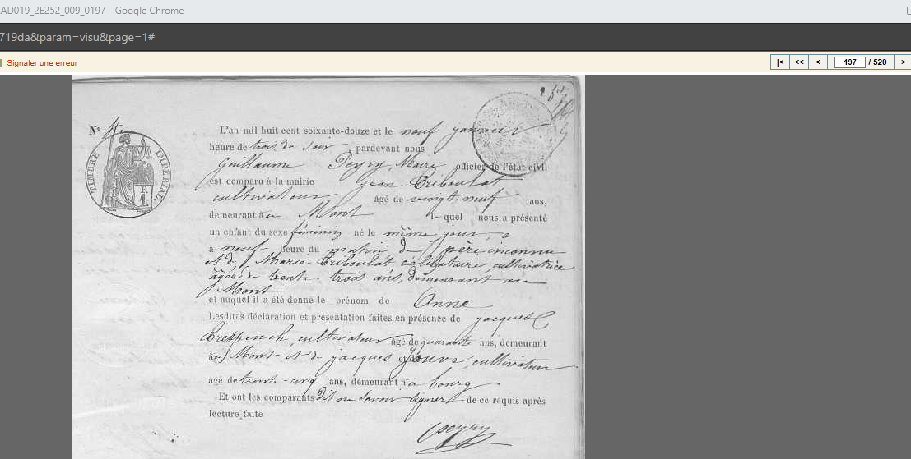
grâce à la table décennale des naissances, j'ai trouvé une marie triboulat née le 5 juillet 1840
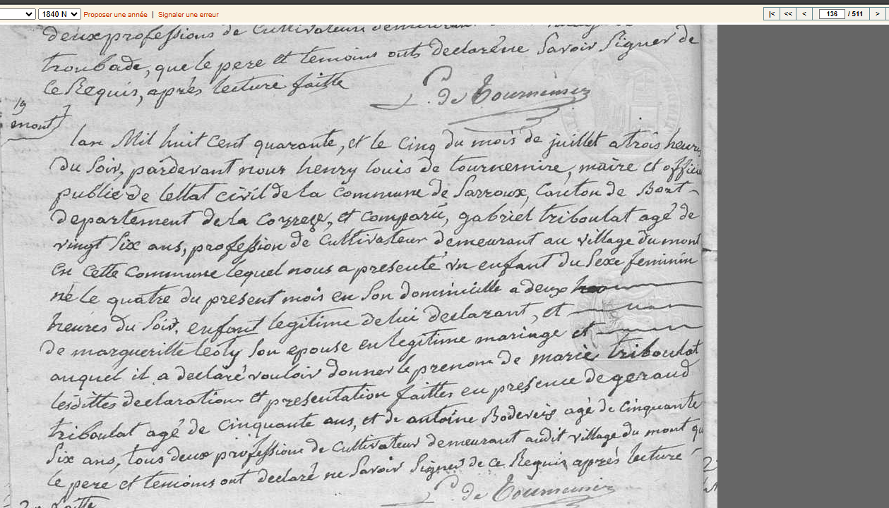
Gabriel, le père de Marie T. pourrait être un oncle de Jean Triboulat ? Il est né vers 1814
Le père de Jean s'apelle Michel. Né vers 1812
Michel et Gabriel serait frère ?

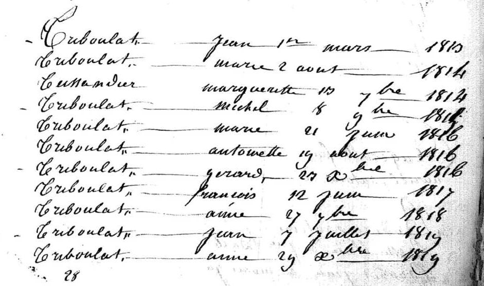
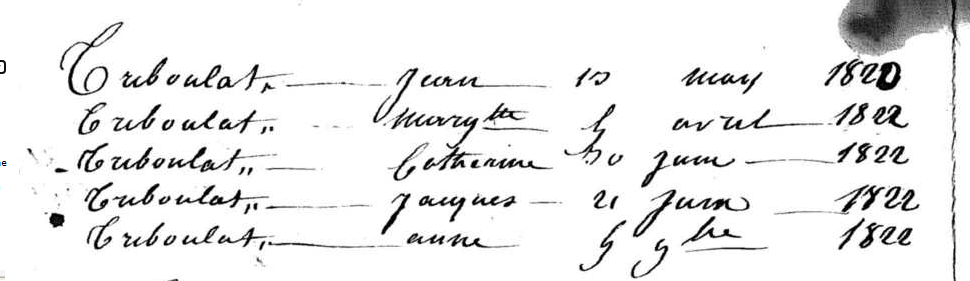
regardons la naissance du Michel de 1814 et du gabriel de 1812
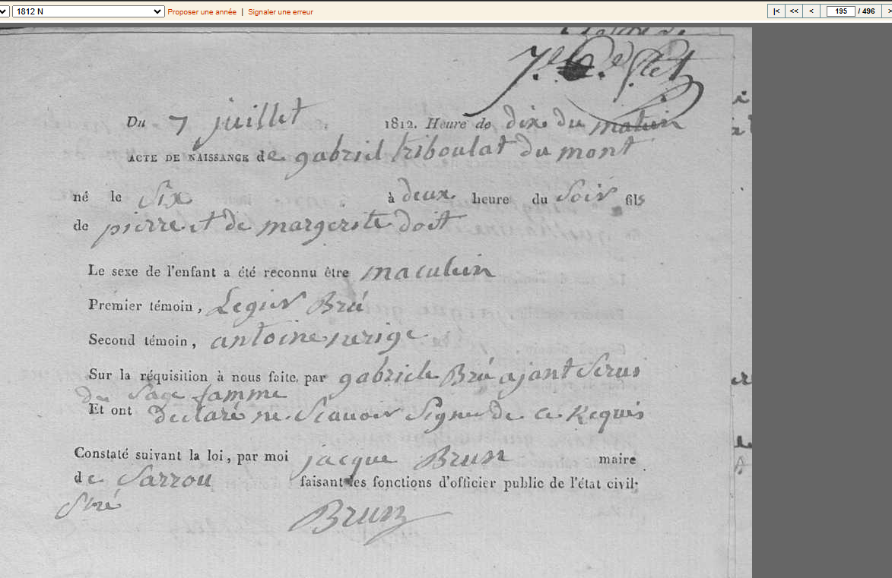
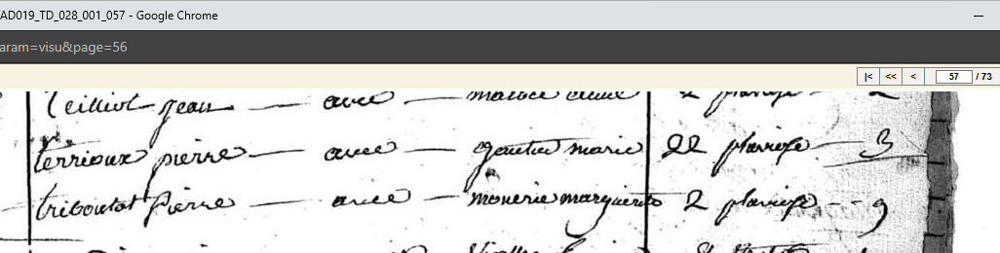
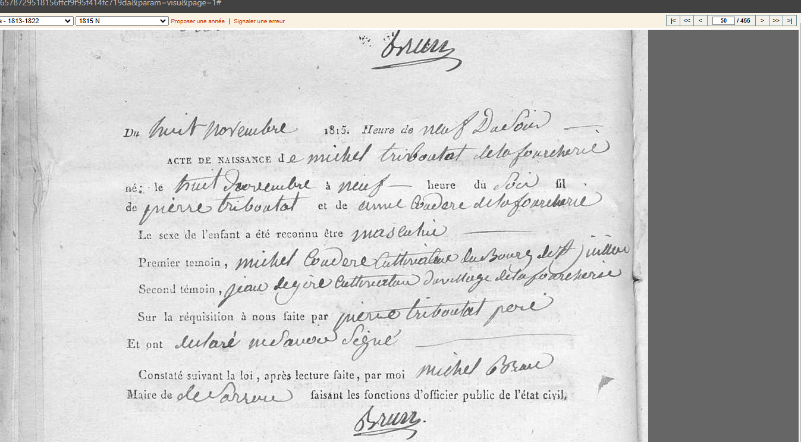
faudrait chercher dans d'autres cantons
On laisse tomber …
Une cousine germaine
chercher la cousine germaine , Amélie Triboulat, 35 ans, gouvernante à Bois-colombes en 1910, au mariage de Jacques.
à partir des frères de Jean Triboulat ..
Sources
Utiliser le site https://presselocaleancienne.bnf.fr/ pour trouver des journaux corréziens et du Lot
Sources commerciales et judidicaires pour le magasin "le palais de la chanson"
Notaires
Testaments
Vérifier sur les "tables de successions" s'il y a des testaments.
il y en a un pour le grand-père Antoine Reyjal (voir son onglet)
contrats de mariage
- celui du mariage joseph triboulat/anna dupuy (la "marâtre" de Simone) ,Chez maître Marotte à Paris
- celui d'antoine Reyjal et Marie Delmond (notaire Louradour à Beyssac)
- celui de Jean Triboulat et (Marie) Anne Bonnet (maitre Régis Lunet Lajonquière, Sarroux ou environ
Carte
distance Sarroux en Corrèze (Joseph Triboulat) - Condat dans le Lot (Marie-Louise Reyjal)
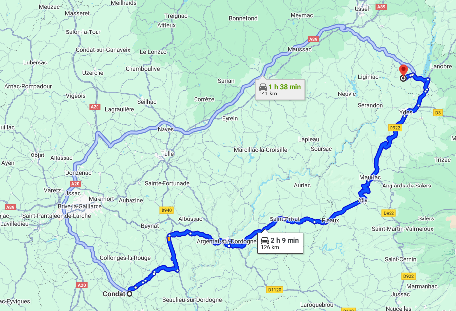
Le grand-père Jean Triboulat (1842-1910)
Naissance
né le 16 avril 1842 à Sarroux
page 169/511
https://www.archinoe.fr/cg19/visu_affiche.php?PHPSID=f8ee48a9811f28ad967fde4f8b9c62ba¶m=visu&page=1#
[Lien Google Drive en cours de chargement...]
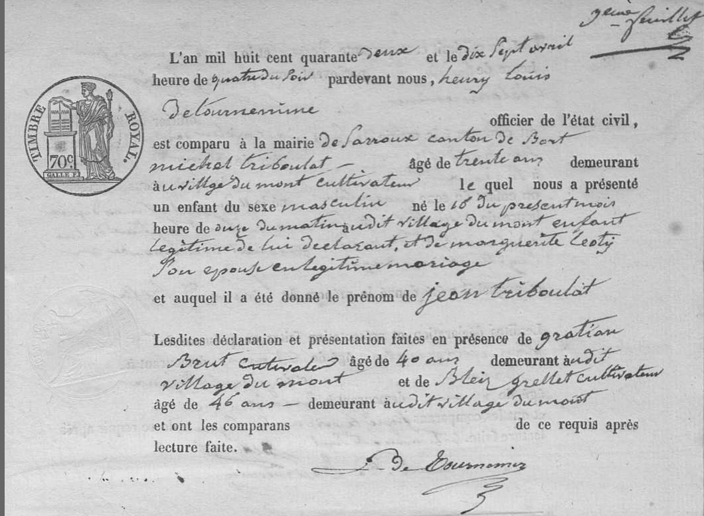
Mariage avec (Marie) Anne Bonnet le 10 juillet 1869
[Lien Google Drive en cours de chargement...]
AD de Corrèze
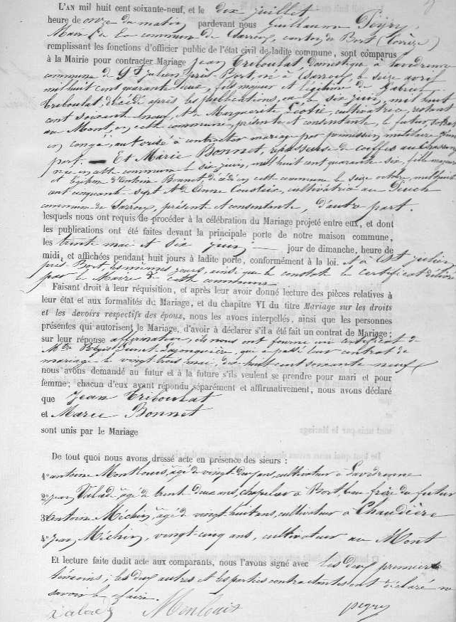
Attention : contrat de mariage
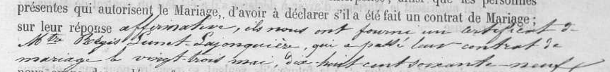
Décès le 30 avril 1910
Au recensement de Sarroux en 1906 (il n'y en a pas avant) , il est vivant
[Lien Google Drive en cours de chargement...]
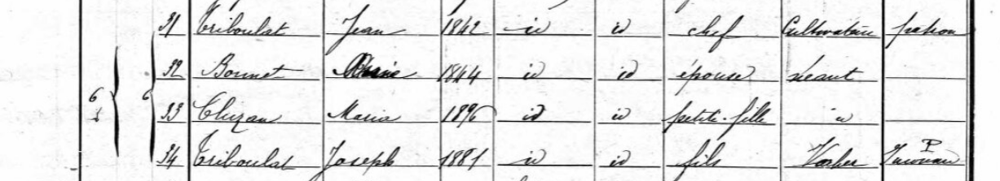
En 1910, il est déjà déclaré décédé d'après l'acte de mariage de Joseph Triboulat avec Marie Celle.
Par contre Marie "Anne" Bonnet, sa veuve est vivante
donc il est mort entre 1906 et 1910
Avec la table des "successions et absences" des A-D de la Corréze on trouve sa date de décès
[Lien Google Drive en cours de chargement...]
page 118/129

Et il y a ce texte à droite :
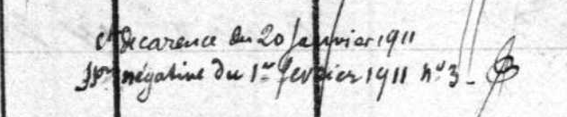
succession négative
"Dans une table d'absences et successions, une succession négative fait référence à une situation où le défunt avait plus de dettes que d'actifs au moment de son décès. En d'autres termes, la succession est déficitaire."
certificat de carence
"Dans une table de successions, l'expression "certificat de carence" ou "PV de carence" fait référence à un document officiel qui atteste que le défunt ne possédait aucun actif au moment de son décès ou que ses actifs étaient insignifiants par rapport à ses dettes."
la tante, Anna Triboulat (1870-1954)
[Lien Google Drive en cours de chargement...] (fonds marius)
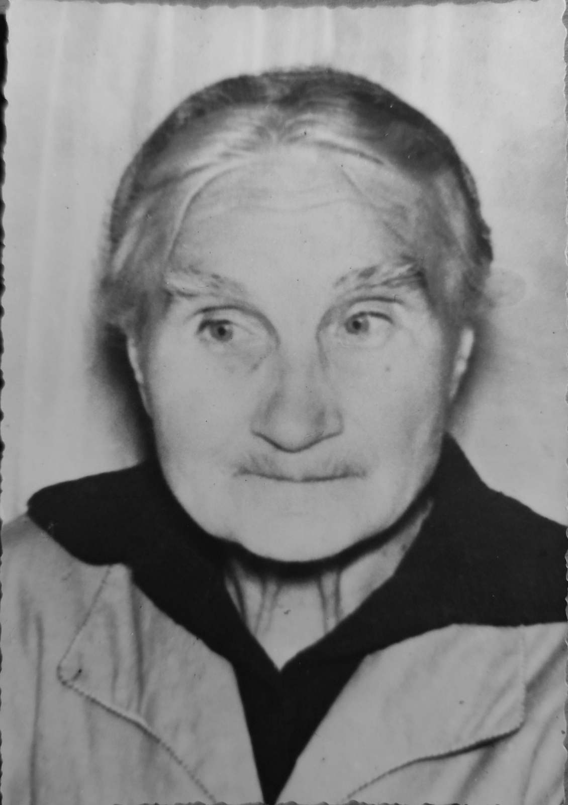
https://gw.geneanet.org/bs1943?lang=fr&iz=0&p=anna+marie+catherine&n=triboulat

acte de naissance de Anna Triboulat
bonnes infos sur cet arbre : https://gw.geneanet.org/bs1943?lang=fr&iz=0&p=anna+marie+catherine&n=triboulat
l'âge du père, qui permet d'indiquer une année de naissance autour de 1842, conforte l'information.
| 15 mai 1870 : | Naissance - Le Peuch - Sarroux, 19252, Corrèze, Limousin, FRANCE Heure: 5:00Sarroux NMD 1863-1872 vue 158 acte n° 14Déclarants : Jean TRIBOULAT, 28 ans, cultivateur au Peuchla mère : Marie BONNETMentions marginales : DCD à Trizac le 10/04/1954 Déclarant : Jean TRIBOULAT, ca 1842- |
|---|---|
| 14 juin 1894 : | Mariage (avec Joseph CLUZANT) - Sarroux, 19252, Corrèze, Limousin, FRANCE Sarroux NMD 1893-1902 vue 178l'épouse signe Anna TRIBOULAT |
| 10 avril 1954 : | Décès - Trizac, 15243, Cantal, Auvergne, FRANC |
https://www.geneanet.org/registres/view/859782/158 (feuillet 158)

recensement Sarroux
1906
page 15/37
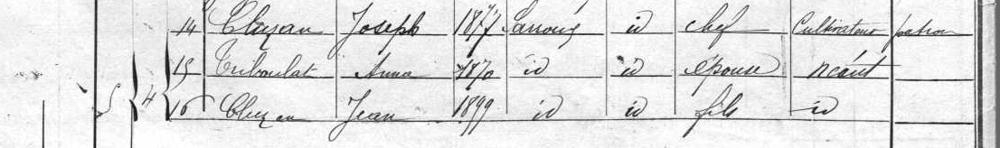
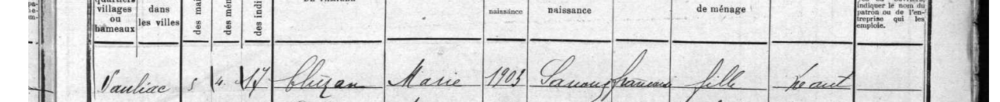
la tante, Marie Triboulat (1872-1961 )
Point de départ geneanet
https://gw.geneanet.org/clarissef?lang=fr&iz=0&p=marie&n=triboulat
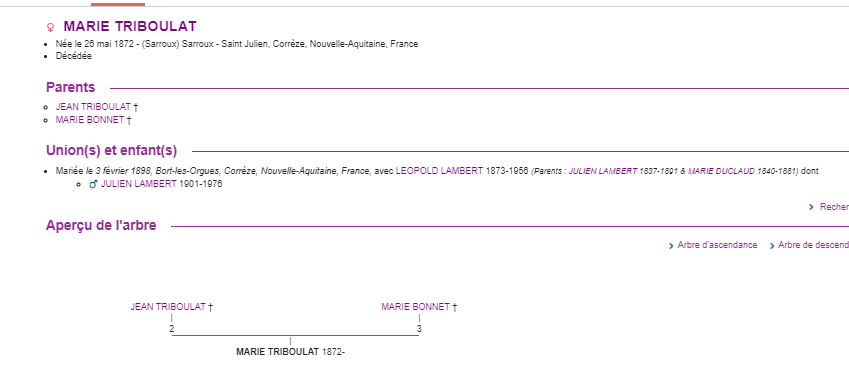
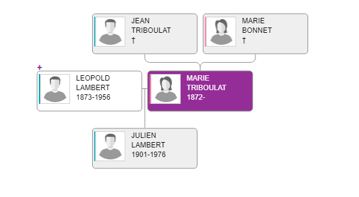
Naissance le 26 mai 1872 à Sarroux
La date est notée dans l'acte de mariage, et l'année est confirmée dans les recensements successifs, mais je n'ai pas trouvé l'acte de naissance à Sarroux.Page 265 de "tables décennales des naissances 1863-187) aux AD de Corrèze.
Je crois savoir pourquoi … (plus bas)
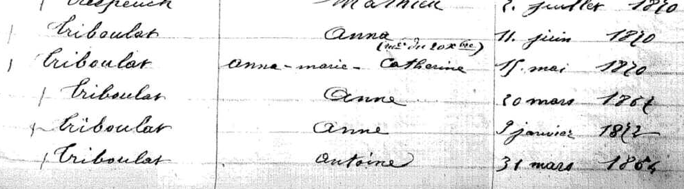
Mariage le 3 février 1898 à Bort-Les-Orgues
[Lien Google Drive en cours de chargement...]
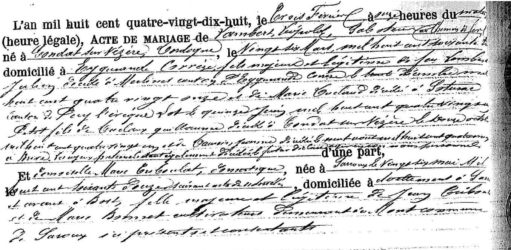
A bien regardé la mention de la naissance de Marie Triboulat, on devine le texte : "suivant acte de notoriété".
https://fr.wikipedia.org/wiki/Acte_de_notori%C3%A9t%C3%A9
"Un acte de notoriété est un « document par lequel un officier public recueille des témoignages en vue d'établir une circonstance ou un fait matériel qu'un grand nombre de personnes ont pu constater, dont ils ont pu avoir connaissance ou qui leur ont semblé avérés. » C'est la preuve par la « commune renommée ». L'acte de notoriété est ainsi utilisé en matière de filiation."
Voilà pourquoi on ne trouve pas d'acte de naissance : il n'y en a pas !
Résidences, métiers et recensements
Son mari, Leopold Lambert, travaillait au début pour les chemins de fer, comme sabotier (?) . Son père était conducteur d'omnibus, aussi aux chemins de fer.
La famille a sans doute habité à Merlines, au moins à la naissance des deux enfants (1899 et 1901) puisqu'ils sont nés là-bas.
Léopold a fait plusieurs métiers signalés dans les recensements.
Et la famille a bougé.
https://maps.app.goo.gl/pjA7YrphYud8VJhW8
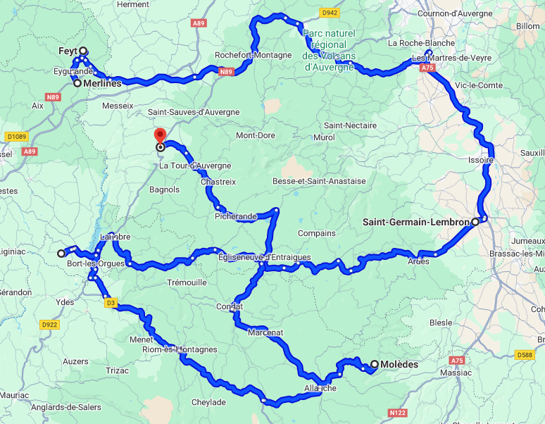
On retrouve la famille à Feyt, 1906 (pas loin de Merlines)
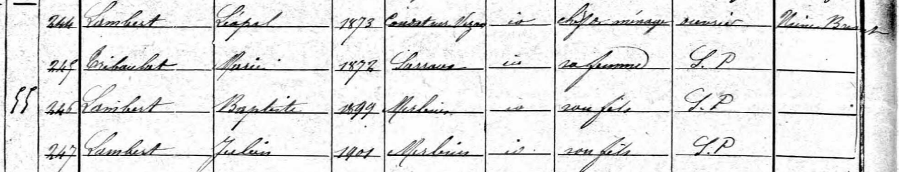
Puis à saint-germain-Lembron en 1911, Puy-de-Dôme
page 33.Le père est meunier.
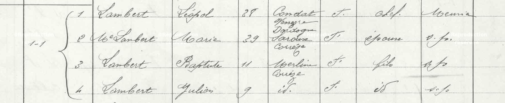
mais en 1921, ils n'y sont plus
en 1914, Léopold Lambert est au Lys (=Le Lys) à Sarroux
d'après son matricule militaire
[Lien Google Drive en cours de chargement...]
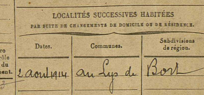
nos trois lambert-triboulat sont toujours à Sarroux en 1921
[Lien Google Drive en cours de chargement...]
Léopold et Julien (20 ans) sont meuniers.
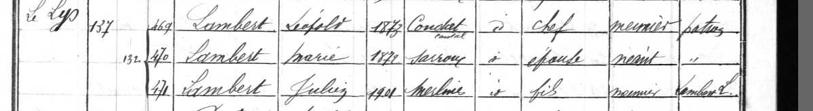
Ensuite Le matricule militaire de Julien signale qu'en 1930, Julien est à Molèdes (oubli du s) dans le Cantal
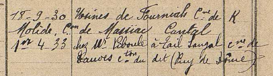
et on le trouve bien là-bas avec ses parents. Lui et son père sont mineurs.
page 5/17
[Lien Google Drive en cours de chargement...]
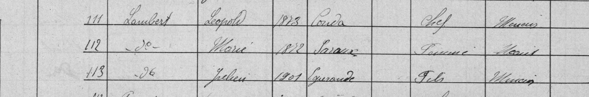
On trouve des infos sur cette mine : https://www.cezalliersianne.fr/index-fr.php?page=patrimoine&id_rubrique=37
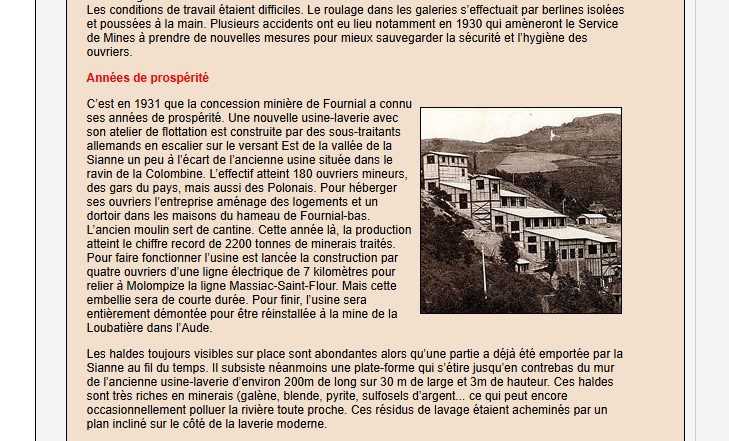
En 1933, Julien est à Tauves dans le Puy-de-Dome, d'après son matricule militaire.
Et en 1936, la famille est encore à Tauves Tiens, ils se sont encore trompés sur une date de naissance (1900 au lieu de 1901)
page 24/30
quartier de Noilhat
en 1946 à Tauves (là où est mort Léopold en 1956)
https://www.archivesdepartementales.puy-de-dome.fr/ark:/72847/2171863.2878097/daogrp/0/11
page 11 / 20
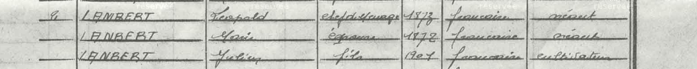
Décès le 24 novembre 1961
https://www.archivesdepartementales.puy-de-dome.fr/ark:/72847/471105.1325222/daogrp/0/190
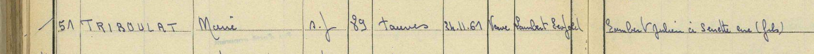
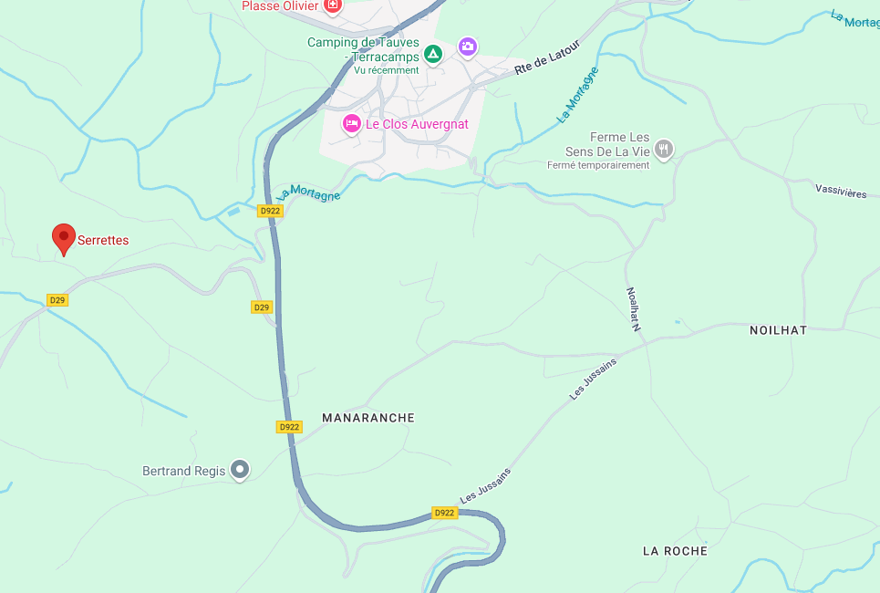
Leopold Lambert- le mari de Marie Triboulat
Naissance le 26 mars 1873
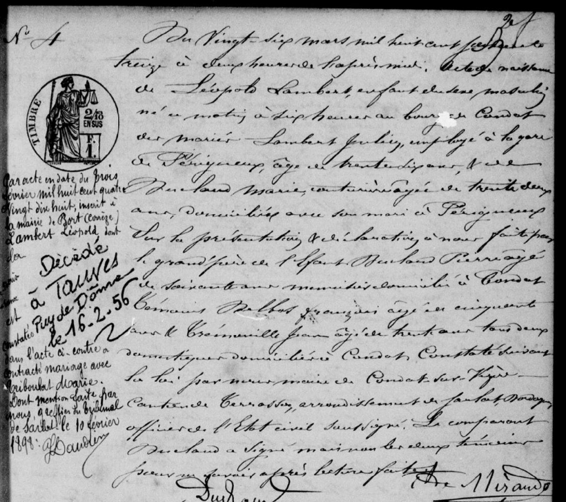
Résidences, métiers
voir "la tante, Marie Triboulat" pour les résidences successives.Pour les métiers :
en 1899 et 1901 il est "terrassier" à la naissance des ses fils (acte)
Décès le 16 février 1956
indiqué dans l'acte de mariage.L'acte de décès n'est pas encore rendu public.
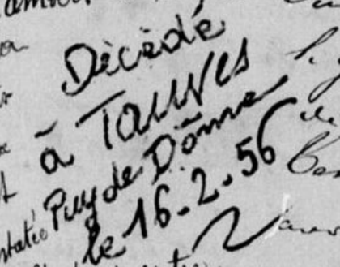
Baptiste Lambert - fils de Marie Triboulat
Naissance en 1899
[Lien Google Drive en cours de chargement...]
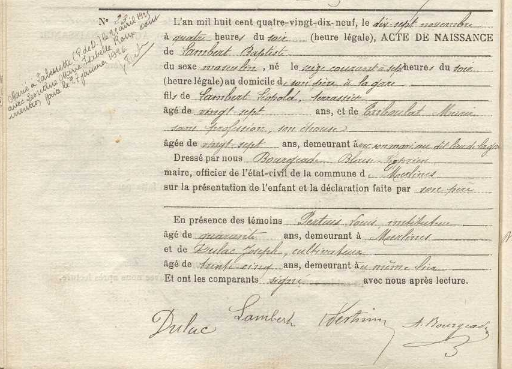
Matricule militaire
[Lien Google Drive en cours de chargement...]
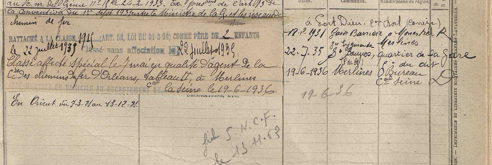
Mariage avec Léontine Marie Isabelle Roux en 1925
L'acte n'est pas en ligne (trop récent)
Deux enfants, d'après le livret militaire.
Leontine ROUX (Leontine Marie Isabelle ROUX) 1903-1988
née le 23 janvier 1903 à Labassette
https://www.archivesdepartementales.puy-de-dome.fr/ark:/72847/vtab7e1bc51fa504130/daogrp/0/2
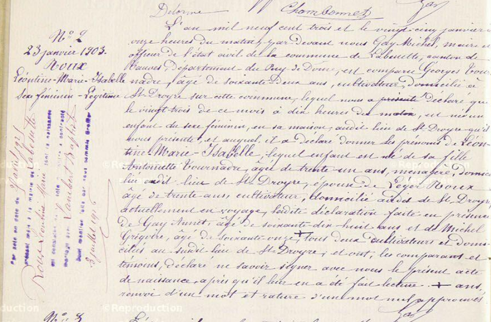
https://www.acte-deces.fr/recherche-deces-famille-roux-1988
Leontine ROUX (Leontine Marie Isabelle ROUX) décédée le 14 août 1988 à Désertines à l'age de 85 ans et née à Labessette (63) le 23 janvier 1903. Acte numéro 188
Julien Lambert - fils de Marie Triboul…
[Lien Google Drive en cours de chargement...]
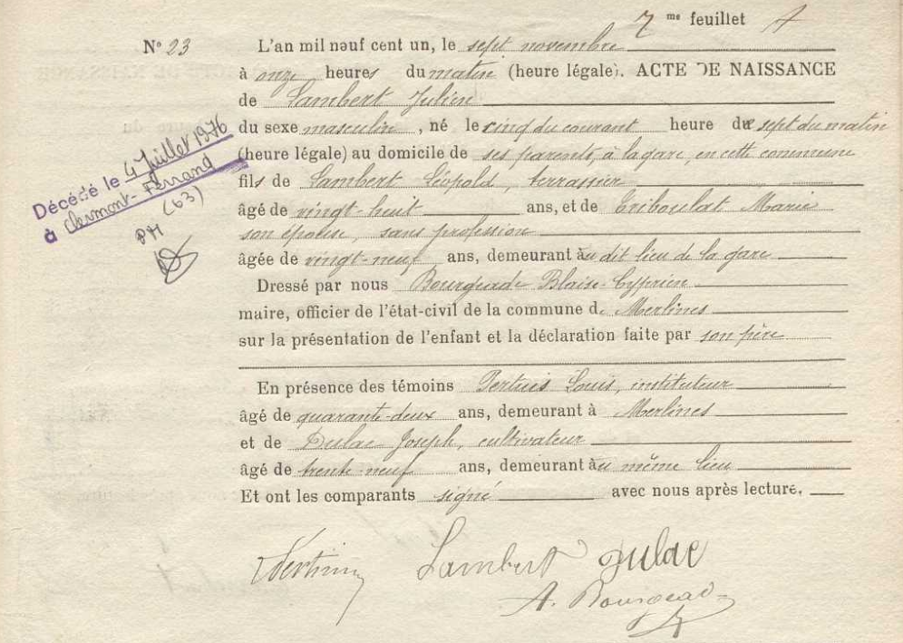
https://www.archivesdepartementales.puy-de-dome.fr/ark:/72847/471105.1325222/daogrp/0/190
L'oncle Jacques Triboulat (1877-1931)
Table des matières
Naissance
Le 7 janvier 1877 à Sarroux.
[Lien Google Drive en cours de chargement...]
on y trouve mention de ses deux mariages
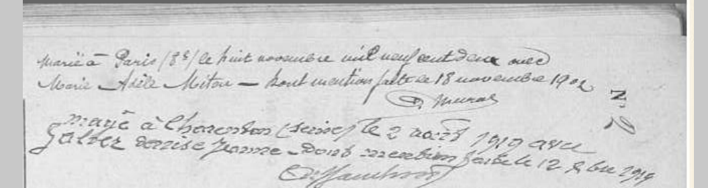
vie militaire
https://www.geneanet.org/registres/view/472614/485?individu_filter=649838
[Lien Google Drive en cours de chargement...]
Remarque : dans l'acte de mariage de Joseph avec sa dernière femme Anna Dupuy, Jacques est presenté comme "croix de guerre".

Il sait lire,écrire, compter, mais n'a pas le brevet élémentaire.
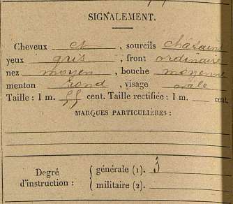
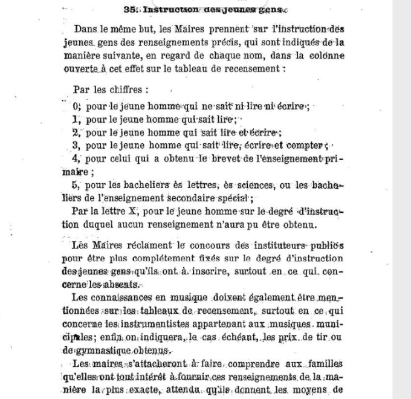
Il est incorporé le 16 novembre 1898 et sort le 21 septembre 1901.
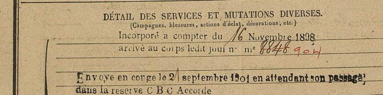
Mas évidemment la guerre le rattrape 1914.
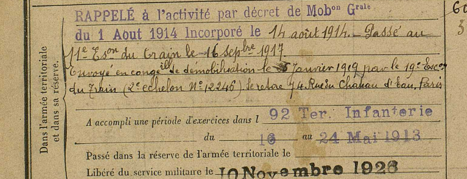
et comme toujours, on a de précieux renseignements sur ses lieux d'habitation.Dès sa sortie du service militaire en 1901, il reste à Paris.
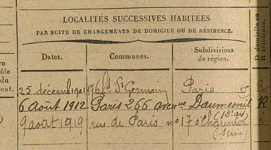
Grâce à Myheritage, j'ai trouvé ça :
https://gallica.bnf.fr/ark:/12148/bpt6k20281564 page 362
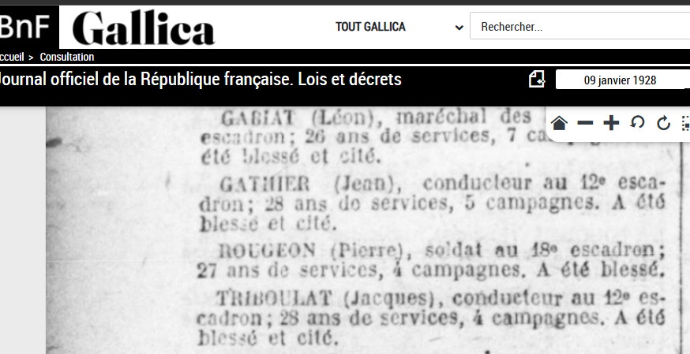
ce qui correspond sur plusieurs points, notamment le 12 ème escadron
Il a donc eu la "médaille militaire". Un peu exagérée en "croix de guerre"
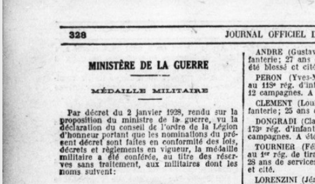
Premier mariage avec Marie Adèle Miton en 1902 (il a 25 ans)
myheritage
archives départementales page 29/31
[Lien Google Drive en cours de chargement...]
[Lien Google Drive en cours de chargement...]
selon Myheritage, Marie Adèle Miton serait née en 1882 et morte en 1918.
En 1902, il est valet de chambre et habite toujours au 176 Boulevard Saint-Germain
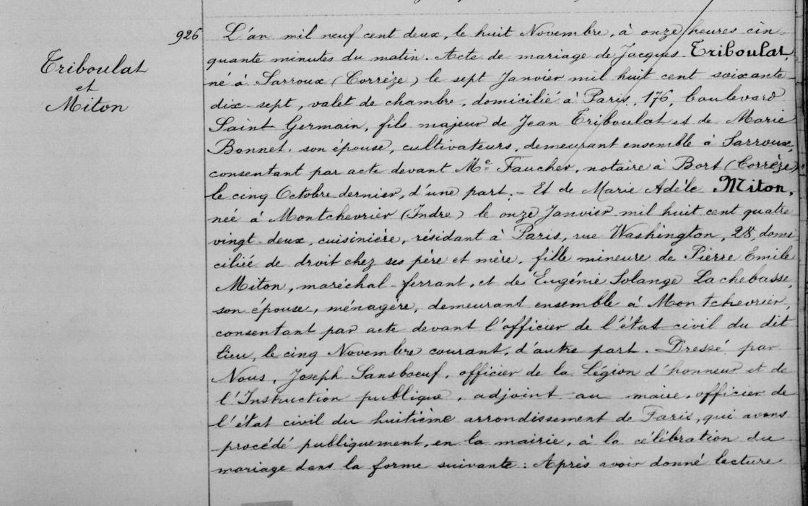
(deuxième) mariage en 1919 avec Denise Jeanne Zalter (il a 42 ans et elle 41)
https://www.geneanet.org/cercles/view/colgnecac94m/297153
[Lien Google Drive en cours de chargement...]
Lui est représentant de commerce, et son épouse est commerçante.

Résidences et métiers
D'après le livret militaire, Jacques est déjà à Paris en 1901, au 176 Boulevard Saint-Germain. A la sortie de son service militaire donc.En 1902, à son premier mariage avec Marie Adèle Miton , il y est toujours. Valet de chambre.
En 1910, au second mariage de son frère Joseph (5 ans de moins), il habite toujours Boulevard Saint-Germain et il est maître d'hôtel
Il n'y a pas à Paris de recensement nominatif avant 1926, donc je ne sais pas le suivre avant 1921.
Mais en 1912, il est au 266 avenue Daumesnil dans le 12ème, d'après son livret militaire.
Il est toujours marié à Marie Adèle.
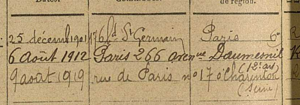
le 266 Avenue Daumesnil aujourd'hui
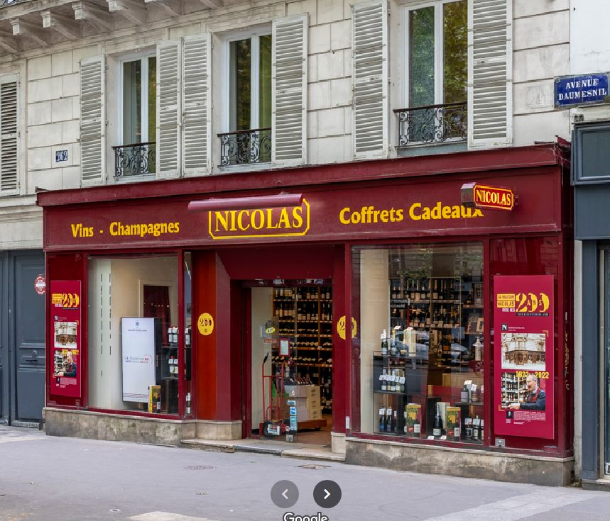
En 1918, Marie Adèle meurt, et il se remarie en 1919, avec une habitante de Charenton. Il va la suivre là-bas.
En 1919, d'après l'acte de mariage, il est représentant de commerce à Saint Mandé.
Toujours en suivant l'indication du livret militaire (trois adresses), j'ai cherché Jacques au 17 rue de Paris à Charenton-Les-Ponts (Val de Marne)Heureusement, les rues sont dans l'ordre alphabétique, et pour chaque rue, on donner d'abord les numéros impairs dans l'ordre croissant, puis les numéros pairs.
En 1921 : archive en ligne page 379/685
[Lien Google Drive en cours de chargement...]
Remarquer l'erreur dans la date de naissance et dans la ville de naissance. J'ai déjà vu des erreurs comme ça dans un recensement.La Denise est négociante en vin et Jacques travaille chez Byrrh, le fameux apéritif
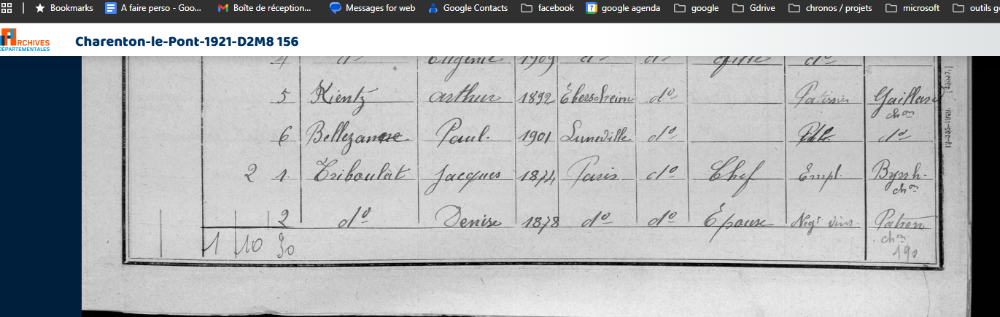
Enn 1924, il est déclaré commerçant (et croix de guerre !) au mariage de son frère Joseph
[Lien Google Drive en cours de chargement...]
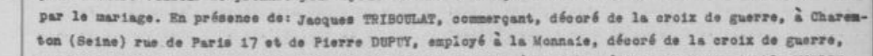
Donc son statut a changé entre 1921 et 1924 (employé > commerçant)
en 1926, on retrouve le couple, cette fois tous deux commerçants. Et la date de naissance et le lieu sont corrects pour Jacques
recensement sur le site des archives départementales
Page 436/744
[Lien Google Drive en cours de chargement...]
En 1931, Il n'y a plus que Denise Zalter. Ce qui va dans le sens d'un décès en 1931 (voir plus bas)
page 393/733
Activités commerciales
Les recherches sont expliquées ici : https://archives.paris.fr/_depot_ad75/_depot_arko/articles/3766/rechercher-un-commercant-un-gerant-de-societe-ou-un-artisan_doc.pdf
Un restaurant avenue Daumesnil à Paris. Mais à quel Triboulat appartient-il ?
Avec une recherche "266 daumesnil" sur retronews pour la péridode 1910 1920, j'ai trouvé :
dans le journal "L'Auvergnat de Paris" du 28 octobre 1911, la vente par un certain Trémoulière d'un restaurant au 266 avenue Daumesnil, à un certain Triboulat
https://www.retronews.fr/reader/677565c2-dfee-41d5-b91c-a83aaa94b886/6
et le 13 février 1912, on trouve cette vente.
https://www.retronews.fr/reader/d142c1f7-6aff-4484-8232-ee952bcacc3b/4
Or, notre Jacques triboulat est domicilé à cette adresse en 1912, et il est maître d'hôtel. S'agirait-il du restaurant d'un parent ? Voire de lui-même ?
en juin 1914. on repère la vente du restaurant , par Triboulat à certain Paris. Triboulat n'a donc pas gardé l'affaire bien longtemps.
https://gallica.bnf.fr/ark:/12148/bpt6k5593012t/f7.item
Le palais de la chanson
https://gallica.bnf.fr/ark:/12148/bpt6k14159677/f1892.image
Il y a une erreur sur l'orthographe, mais c'est sans notre Triboulat, au vu de l'adresse.Et d'après le document c'est l'unique commerce ce musique à Charenton.
En 1931, on sait qu'il a son magasin de musique avec la table des successions (voir plus bas)
Photo du fonds "simone Triboulat". [Lien Google Drive en cours de chargement...]
D'après la boîte en forme de pellicule "agfa Berlin SO 36", la photo date d'après 1925.
Avec l'aide d'un membre du forum retrotechnique, on peut penser que la photo a été prise en 1931
Auparavant, avec l'enseigne en forme de pellicule photo et l'inscription "agfa berlin so 36", j'avais pu établir que la photo avait été prise après 1926https://de.wikipedia.org/wiki/Agfa
Ca c'est le 19 rue de Paris en 2023 (Google street view)
La structure n'a pas tellement changé
décès
sur geneanet j'ai trouvé dans le registre du Père Lachaise un Jacques Triboulat
[Lien Google Drive en cours de chargement...]
et il est noté "Venant de Charenton".
Or Jacques s'est marié en 1919 à Charenton-le-Pont et y est resté au moins jusqu'en 1926, mais n'y est plus en 1931. Problème : l'état civil des décès pour Charenton (actuellement dans le Val-de-Marne) s'arrête en 1922.
Mais .. myheritage vient nous aider avec la "table des successions et absences"
- Résidence Charenton-le-Pont, Val-de-Marne, Île-de-France, France
- Décès 11 janv 1931 - Maisons-Alfort, Val-de-Marne, Île-de-France, France
[Lien Google Drive en cours de chargement...]
Le père, Joseph Triboulat (1882-1946)
Table des matières
On va sur le site des archives départementales de la corrèze
On commence par rechercher la série des naissance-décès-mariages de la période
Puis dans la deuxième liste déroulante, on choisit l'année (1882) et le type (N=naissance)
Il y a 14 feuillets,
autant aller au dernier feuillet qui est une table récapitulative.
Feuillet 180: on trouve notre Joseph, né le 16 avril 1882
Et voilà l'acte :
[Lien Google Drive en cours de chargement...]
L'épouse est dénommée Anne
On y apprend :
- que le prénom d'usage de la femme de Jean Triboulat, son père, est Anne, même si c'est Marie (Bonnet) sur son acte
- que les parents ne savent pas écrire, ni même signer
- que Joseph est mort à Sainte-Geneviève-des-Bois le 3 mars 1946
- les dates de deux mariages avec Marie Louise Reyjal en 1911 et Anna Dupuy le 5 juillet 1924
Premier mariage de Joseph Triboulat avec Maria Celle le 8 oct 1910
acte de mariage : https://www.geneanet.org/cercles/view/colgnecac75m/115429
On y apprend que Joseph a un frère de 32 ans, Jacques Triboulat, maître d'hôtel à Paris. Et une cousine germaine Amélie Triboulat, 35 ans, gouvernante à Bois-colombes.
[Lien Google Drive en cours de chargement...]
Joseph est certes né en Corrèze, mais il est précédé à Paris par son frère, qui (voir plus loin le matricule militaire de Jacques) est déjà à Paris depuis au moins décembre 1901 d'après le matricule militaire..
Maria Celle est encore en Corrèze, à Serrandon, au recensement de 1906 (dans une fratrie de 10 enfants)
Second mariage de Joseph Triboulat avec Marie Louise Reyjal (la mère de Simone) en 1911
acte de mariage , 12 août 1911 à Paris 6ème :
- [Lien Google Drive en cours de chargement...]
- https://www.geneanet.org/cercles/view/colgnecac75m/115881
A la mairie .. et à l'église
https://www.retronews.fr/journal/l-auvergnat-de-paris/12-aout-1911/1677/3119851/5
Troisième mariage avec Anna Dupuy le 9 août 1924
Trouvé sur geneanet
https://gw.geneanet.org/kdauphinetjegu?n=triboulat&oc=&p=joseph
(Joseph) Marié le 5 juillet 1924 (samedi), Paris 08 Ème, 75008, France, avec Anna DUPUY, née le 20 novembre 1879 (jeudi) - Affieux, 19001, Corrèze, Limousin, France, décédée le 18 mars 1965 (jeudi) - Arpajon, 91021, Essonne, Ile-de-France, France à l'âge de 85 ans (Parents : Léonard DUPUY †1894/ & Catherine FARGEAS 1851-1894)
Mariée le 2 février 1907, Treignac, 19260, Corrèze, Limousin, France, avec Martial RAYMONT 1879-1916
Mariée le 5 juillet 1924, Paris 08e, 75008, Paris, Ile-de-France, France, avec Joseph TRIBOULAT
Problème : on ne trouve pas ce mariage le 5 juillet 1924 à Paris 8ème !
Dans cet arbre geneanet, on voit une première erreur sur la date de naissance, car elle est née le 21 Novembre (et non le 20) 1879 à Affieux
voici l'acte de mariage,qui a eu lieu dans le 5ème arrondissement, et non le 8ème.
[Lien Google Drive en cours de chargement...]
cote 5M 272, page 22
[Lien Google Drive en cours de chargement...]
contrat de mariage chez maître Marotte à Paris
Comment j'ai fait pour trouver ?Avec geneanet, j'ai eu l'acte de décès du premier mari,
On voit que son dernier domicile était dans le cinquième arrondissement.
Ensuite, on il n'y a plus qu'à vérifier dans les tables décennales des archives de Paris pour voir que Joseph Triboulat s'est bien marié dans le 5ème arrondissement (l'arrondissement de son épouse donc) le 5 juillet, puis aller chercher l'acte
[Lien Google Drive en cours de chargement...]
Vie militaire de Joseph Triboulat.
https://www.geneanet.org/registres/view/472577/249?individu_filter=544216
[Lien Google Drive en cours de chargement...]
il a été ajourné en 1903, peut-être à cause de sa taille (1.53), sachant que la taille minimale était de 1.54 m
Ensuite, deux ans de service militaire (oct. 1904, sept. 1906).
Et rappel le 1er août 1914.
blessé le 17/6/1917.
Croix de guerre pour ses actions au front en 1914, 1917, 1918.
Au total, il a passé plus de six ans comme militaire, dont quatre de guerre.
Au recensement de 1906, Joseph est à Sarroux, avec ses parents et une petite fille (10 ans) de ses parents, Maria Cluzant, fille de Anna Triboulat-Cluzant
Il est vacher. Une erreur sur sa date de naissance (en fait 1846) et une rature éloquente sur le prénom (Marie ? Anne ?)
[Lien Google Drive en cours de chargement...]
(zone : "Mont")
En 1911
[Lien Google Drive en cours de chargement...]
page 26/36
Cette fois, le prénom "administratif" Marie est rétabli, ainsi que l'année.
Résidences
C'est dans le livret militaire
La grand-mère Marie "Anne" Bonnet (1846-...)
Naissance en 1846
Marie Bonnet à l'état civil, née le 6 juin 1846.Mais on apprendra plus tard, par des recensements et lors du premier mariage de Joseph son fils, que son prénom d'usage était Anne.
[Lien Google Drive en cours de chargement...]
page 75/549
Mariage en 1869
Dans la période 1863-1872, on trouve pour les mariages :
Et on peut vérifier que c'est bien notre Jean ! Parce qu'en regardant l'acte de mariage correspondant, on voit que ce Jean là est né le 16 avril 1842, et il n'y a qu'un Jean Triboulat qui est né à Sarroux. Le "nôtre".
https://www.archinoe.fr/cg19/visu_affiche.php?PHPSID=f8ee48a9811f28ad967fde4f8b9c62ba¶m=visu&page=1
page 291/520
Donc il est bien marié à une Marie Bonnet, qui sans doute se faisait appeler Anne.
[Lien Google Drive en cours de chargement...]
et ça explique ce détail indiqué dans l'acte de mariage de Joseph avec Maria Celle

Décès le 28 février 1914
En 1911, elle est seule et veuve, à Sarroux. Elle a 65 (ou 64) ans
[Lien Google Drive en cours de chargement...]
page 26/36
Cette fois, le prénom "administratif" Marie est rétabli, ainsi que l'année.
On trouve sa date de décès, le 28 février 1914, dans la "table des successions et absences".
page 6/129
[Lien Google Drive en cours de chargement...]
Elle avait 67 ans
grâce à Retronews, j'ai pu trouver ceci dans le journal "Le facteur" du 7 mars 1914
https://gallica.bnf.fr/ark:/12148/bd6t512442814
[Lien Google Drive en cours de chargement...]
Le grand-père Antoine Reyjal (1850-1925)
Table des matières
Naissance le 23 octobre 1850 à Saillac
Archives départementales du Lot. Feuillet 78/350
[Lien Google Drive en cours de chargement...]
Condat est au nord du Lot, et Saillac est en corrèze.
Mariage le 15 février 1885
Marié le 15 février 1885, Condat (46),
https://archives.lot.fr/ark:/77978/s005bf6cd24f0032/5bf6cd24f23e0
[Lien Google Drive en cours de chargement...]
[Lien Google Drive en cours de chargement...]
Un contrat de mariage a été fait
On ne peut pas bien lire le nom de la commune du notaire, Maître Louradour.
Si c'est Beyssac, on peut trouver des renseignements sur cette carte du site des archives du Lot, qui donne des indications historiques pour chaque commune.
https://archives.lot.fr/f/communes/carte/?
ou celle-ci
https://fr.wikipedia.org/wiki/Les_Quatre-Routes-du-Lot#/map/0
On pourra chercher le contrat de mariage aux archives du Lot :
https://archives.lot.fr/a/193/la-recherche/
décès le 12 septembre 1925
pour trouver la date de décès, on peut utiliser les tables décennales de décès de condat (Lot) ou les recensements successifs.
https://archives.cantal.fr/rechercher/genealogie
au recensement de 1911, il est encore là (voir les recensements de condat, à propos de Marie Louise Reyjal). D'ailleurs sa fille Marie louise se marie en 1911, et il est indiqué vivant.
en 1921 aussi.
Recensement condat 1921
[Lien Google Drive en cours de chargement...]
page 9 sur 16
Les trois enfants sont partis, jules, Marie-Louise et Louis.
Antoine a 71 ans. Et il est toujours cantonnier
Recensement condat 1926
[Lien Google Drive en cours de chargement...]
Marie Reyjal est sans doute veuve .
On remarquera l'orthographe erronnée pour le nom de famille.
Le 24 octobre 1922, Antoine Reyjal est encore vivant car cité dans l'acte de mariage de son fils Louis Guillaume Reyjal[Lien Google Drive en cours de chargement...]
Antoine Reyjal n'est pas dans la table décennale des décès 1913-1922. Il est donc mort entre le 24 octobre 1922 et 1926
Mais il n'y a plus d'actes de décès en ligne après 1922 pour Condat.
Finalement, j'ai trouvé, non pas l'acte de décès, mais une ligne dans la "table des successions et absences" de Vayrac (auquel est rattaché condat en 1925), sur le site des AD du Lot.
[Lien Google Drive en cours de chargement...]
et il avait fait un testament le 7 septembre
Autres pistes
Puisqu'il y a un contrat de mariage entre Antoine Reyjal et Marie Délmond, peut-être qu'est indiqué le décès.
Condat est dans le canton de Martel (18 communes), dans l'arrondissement de Gourdon,
https://fr.wikipedia.org/wiki/Arrondissement_de_Gourdon
https://fr.wikipedia.org/wiki/Canton_de_Martel
recensement, recherche des oncles et tantes Reyjal
Oncles de Simone : la fratrie de Marie Louise Reyjal
En l'absence de livret de famille, on inspecte les recensements successifs dans la commune de naissance, condat
recensement 1891
en 1891, elle a trois ans et un frère Louis tout récemment né (15 jours), né donc en 1891
Il est possible que Marie soit son prénom d'usage, plutôt que Marie-Louise.
page 4.
Il faut chercher le quartier "Laborie" (devenu La Borie aujourd'hui)
https://adresse.data.gouv.fr/carte-base-adresse-nationale?id=46074_5bfcc9
Il n'y a que quelques maisons, peut-être qu'avec les photos de maman, on trouvera.

Recensement 1896
en 1896, il y a un frère de plus, Jules, 1 an en 1896. La mère est maintenant "couturière".La belle-mère Marie Delmond, 74 ans, est à la maison.
Page 4.
Recensement 1901.
Le petit jules n'est plus là.
Marie, la mère, est maintenant chiffonnière.
page 7
recensement 1906
Marie est redevenue couturière.
Un nouveau Jules, né en 1901 apparaît. Pour rappel, le premier jules avait 1 an en 1896. Il est sans doute mort.Marie-Louise, 18 ans n'est plus à la maison.
et Louis (Guillaume), 15 ans, non plus, mais il va revenir avant 1911
Page 8
Recensement 1911
Louis est à nouveau là, il est cultivateur. Il a 20 ans
page 11
Recensement 1921
[Lien Google Drive en cours de chargement...]
page 9 sur 16
Les trois enfants sont partis, jules, Marie-Louise et Louis.
Antoine a 71 ans. Et il est toujours cantonnier
Recensement 1926
[Lien Google Drive en cours de chargement...]
Marie Reyjal est veuve .
On remarquera l'orthographe erronnée pour le nom de famille.
Recensement 1931
[Lien Google Drive en cours de chargement...]
La mère de Simone : Louise Reyjal (1887-1924)
Marie Louise Reyjal (1887-1924), la mère de Simone
naissance
née le 7 août 1887 à Condat dans le Lot (attention, il y a un autre condat dans le cantal)
[Lien Google Drive en cours de chargement...]
Localités successives (recensements)
on peut chercher dans les archives du Lot
mariage
https://www.geneanet.org/cercles/view/colgnecac75m/115881
[Lien Google Drive en cours de chargement...]
décès (Paris)
[Lien Google Drive en cours de chargement...]
https://www.geneanet.org/cercles/ancestry/view/colgnecac75d/62058_B956550/35?from_releve=1
L'oncle Louis Guillaume Reyjal (1891-1967)
L'oncle Louis "Guillaume" Reyjal (1891-1967)
né le 28 mars 1891 à Condat et mort à Montreuil le 10 octobre 1967.
Sur geneanet, on peut trouver un arbre avec l'oncle Louis Reyjal.
https://gw.geneanet.org/nadiaennl?n=reyjal&oc=&p=antoine
Cet arbre ne contient que 224 personnes ce qui est intéressant, car l'auteur de l'arbre est une cousine pas trop éloignée
Notre arrière-grand-mère Marie Reyjal et l'arrière-grand-père Louis (Guillaume) Reyjal de l'auteur de cet arbre, étaient frères et soeur !
Naissance
[Lien Google Drive en cours de chargement...]
[Lien Google Drive en cours de chargement...]
En note marginale, on y apprend qu'il s'est remarié en 1922 à Puybrun dans le Lot puis en 1952 à Bobigny (Essonne)
le pays du mariage de 1922 est Puybrun
Paquerette s'était déjà mariée en 1908 (geneanet)
Mariage avec Hortense Rouzade (1891-1974) le 4 août 1917
Hortense Rouzade, née le 17/04/1891 - Décédée le 03/10/1974 à Carcassonne.
[Lien Google Drive en cours de chargement...]
Le couple s'installe à Vayrac, leur fille Jeanne (voir plus bas) y est née et s'y est même mariée en 1941.
Louis y est encore en 1921, mais n'habite pas avec sa famille, et en 1922 il se remarie avec une originaire de Puybrun, Paquerette Bucquet, qui habite Paris.
Hortense, née en 1891 comme Louis, meurt à Carcassonne en 1974.https://www.geneanet.org/cercles/view/colgnecminsee/1048972
D'après le livret militaire de Louis, il aurait eu cinq enfants ???? Ce sont les enfants de Paquerette qui s'ajouteraient à Jeanne ??
En 1919, après son service militaire, il se retire à Vayrac.
Par contre en 1923, il est à Bobigny où il est marié avec Paquerette Bucquet depuis 1922
il occupe plusieurs emplois
- cultivateur (en 1917 à son mariage avec Hortense), mais n'oublions pas qu'il passe 7 ans au service militaire entre 1912 et 1919
- Terrassier à Puybrun (Lot) au moment de son mariage avec Paquerette Bucquet
- valet de chambre, manutentionnaire, Terrassier mineur en 1937 (livret militaire)
Remariage avec Pâquerette léontine Françoise Bucquet en 1922
[Lien Google Drive en cours de chargement...]
à cette époque sa fille Jeanne a 4 ans.
En 1923, il est à Bobigny, avenue de la Pochette
Question : que font Hortense et sa fille Jeanne après le divorce ? où habitent-t-elle ?
Pour le savoir, on peut regarder les notes marginales de son acte de naissance à Vayrac
page 3/11
on voit qu'elle s'est remariée avec un certain françois Lugan en 1926
Troisième mariage avec Alice Boucherit le 16 août 1952
Il à 61 ans.
Alice Boucherit est née en 1883 en Charente.
https://www.myheritage.fr/profile-851458391-1500343/alice-boucherit
Nom Alice BOUCHERIT
Sexe Femme
Naissance 1883
Châteauneuf-sur-Charente, Charente, Nouvelle-Aquitaine, France
Résidence Ivry-sur-Seine, Val-de-Marne, Île-de-France, France
Décès 8 nov 1970
Ivry-sur-Seine, Val-de-Marne, Île-de-France, France
Inscription 1970
Ivry-sur-Seine
Père Jean BOUCHERIT
Mère Marie BERTHEAU
Mari Louis REYJAL
Elle a eu un fils de son premier mariage : andré Largier
Sa descendance
Le couple Louis Reyjal/Hortense Rouzal a une fille unique, Jeanne Andrée Reyjal, née à Vayrac (Lot) le 26 février 1918
Jeanne s'est mariée en 1941 à Vayrac à un certain Robert Pilate
d'après la table décennale 1913-1922 on ne voit qu'un enfant Reyjal dans cette période: Jeanne
d'après son livret militaire Louis a eu au moins cinq enfants;
Mais ce ne sont pas les enfants du couple Reyjal/Rouzade, car divorce avant 1922
Jeanne Andrée Reyjal 1918-1993
Jeanne s'est remariée avec un nommé Holstein.
Elle est morte le 9 août 1993 dans l'Essonne à Fontenay-lès-Briis..
Quant à Pilate, voilà ce que je sais, d'après geneanet :
Né le 30 juillet 1920 - Dorceau (61). Décédé le 29 mai 1994 - Châtillon sur Seine (21), à l'âge de 73 ans
Le fait qu'il meure en 1994 loin de sa (son ex) femme Jeanne Andrée va dans le sens du divorce et remariage de Jeanne avec holstein
ils ont eu au moins une fille : Olga Pilate , morte à 23 ans..https://www.myheritage.fr/research/collection-14100/arbres-genealogiques-filae?itemId=242837799&action=showRecord&recordTitle=Olga+PILATE
elle s'est mariée avec Michel Jean Marie Millet et a eu une file
La créatrice de l'arbre (nadia…) est une fille d'olga pilate
https://copainsdavant.linternaute.com/p/nadia-matot-14072678
Nadia Matot
message envoyé via copainsdavant
bonjour,
en faisant des recherches sur mon histoire familiale, je suis tombé sur votre arbre dans geneanet.
Votre grand-mère Jeanne Reyjal et ma grand-mère étaient cousine germaine.
Je limite mes recherches au XIXᵉ siècle et à la première moitié du XXᵉ siècle et cherche notamment des éléments d'histoire familiale qui n'apparaissent pas dans les archives publiques, comme des photos, des lettres, des récits transmis oralement.
Cordialement,
service militaire de Louis Reyjal
[Lien Google Drive en cours de chargement...]
[Lien Google Drive en cours de chargement...]
Parti au service militaire en octobre 1912, il n'en partira qu'en août 1919. C'est long !
Blessé deux fois en 1916.
Le 2 septembre 1923, on signale qu'il est père de cinq enfants
Croix de guerre
Recensements concernant Louis Reyjal
en 1921, Louis Reyjal est toujours à Vayrac, comme "poseur"
Mais il ne cohabite plus avec sa femme Hortense et sa fille Jeanne. La belle-mère, Louise Rouzade, vit avec sa fille et sa petite fille.
Recensement Vayrac 1921, page 6 sur 49.[Lien Google Drive en cours de chargement...]
On sait que Louis habite rue de la Pochette à Bobigny (93) en 1923, d'après le livret militaire.
sur les AD de la Seine-Saint-Denis, le recensement de Bobigny de 1926 confirme à la page 148/194, l'existence de
- trois enfants du premier mariage de Paquerette Bucquet avec Mezecage :
- Edmonde, née en 1908
- Jean, né en 1911
- Jeanne, née en 1914
- un enfant du couple : André Reyjal, né en 1923
Ce qui fait bien cinq enfant, avec Jeanne Andrée Reyjal née en 1918 du premier mariage
[Lien Google Drive en cours de chargement...]
au recensement de 1931, on retrouve la famille, avec seulement les deux plus jeunes enfants, Jeanne Mezecage et Andrée Reyjal.
Louis est manoeuvre et sa belle fille Jeanne est tricoteuse
[Lien Google Drive en cours de chargement...]
page 227/293
Au recensement de 1936, on trouve toujours, rue de la Pochette :
[Lien Google Drive en cours de chargement...]
page 226/301
L'oncle Jules Reyjal (1901-1969)
L'oncle Jules Reyjal 1901-1969
fromageries Charles Gervais (Paris)
Naissance
myheritage
Mariage avec Jeanne Tourlan
Décès le 3 décembre 1969 à Nogent-sur-Marne
Résidences
En 1921, il est à Charenton-le-Pont, rue de Paris. Pas loin de son frère Jacques.
La grand-mère Marie Delmond (1861-1932
Naissance le 13 juin 1861 à Condat
Mariage le 15 février 1885
https://archives.lot.fr/ark:/77978/s005bf6cd24f0032/5bf6cd24f23e0
[Lien Google Drive en cours de chargement...]
[Lien Google Drive en cours de chargement...]
Voir l'onglet Antoine Reyjal pour mes remarques sur le contrat de mariage
Résidences et recensements
voir l'onglet "recensement, recherche des oncles et tante"Elle est à Condat jusqu'en 1931 au moins (69 ans)
Décès le 11 février 1932
[Lien Google Drive en cours de chargement...]
[Lien Google Drive en cours de chargement...]
simone Triboulat (1913-2001)
Née le 2 mars 1913, quartier saint germain dans le 6e à Paris
Acte de naissance
https://archives.paris.fr/r/284/etat-civil-a-partir-de-1860/
Page 16 dans la visionneuse
ou directement ici (visionneuse)
[Lien Google Drive en cours de chargement...]
Mariée à Sainte-Geneviève-des-Bois, le 17 novembre 1933, avec Marius Joseph Baptistin Bousquet.
Décédée à Counozouls, dans l'Aude, le 6 novembre 2001.
Le 2 mars 1913, 4 h du soir, est née Rue Bonaparte, 26, Simone, du sexe féminin, de Joseph Triboulat, 30 ans, employé à la Monnaie, et de Marie-Louise Reyjal, son épouse, 25 ans, concierge, demeurant à Paris, rue Bonaparte, 26.
Dressé par nous le 4 mars courant à 9 h un quart du matin sur présentation de l'enfant et déclaration faite par le père. En présence de Henri Sergent, employé à la Monnaie, demeurant à Paris, place Denfert Rochereau 26, et de Joseph Bichon, employé à la Monnaie, demeurant à Paris, rue Burq et qui, lecture faite, ont signé avec le déclarant et nous, Louis Simon Juquin, adjoint au maire du 6ᵉ arrondissement de Paris.